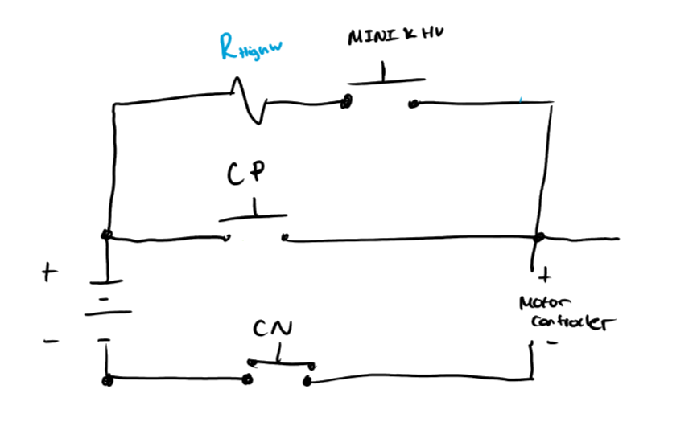
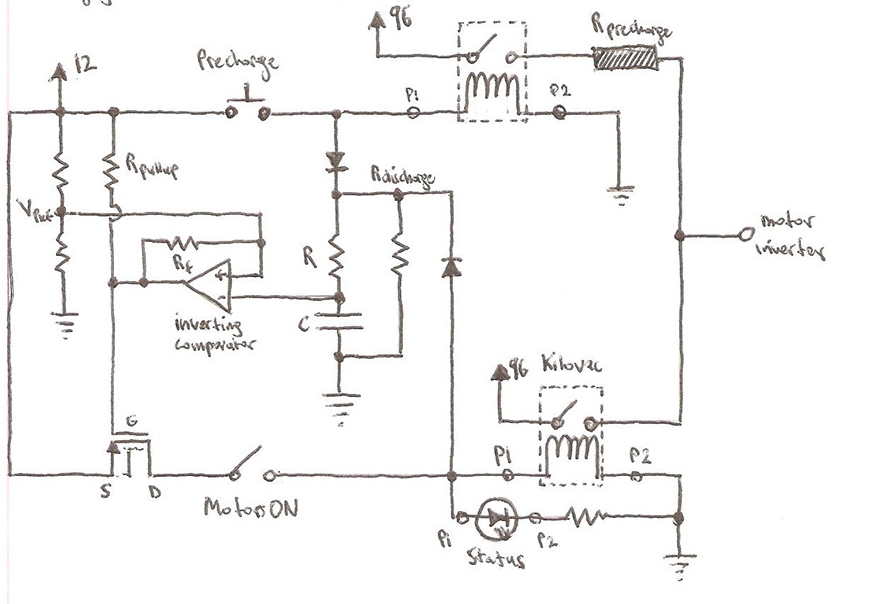
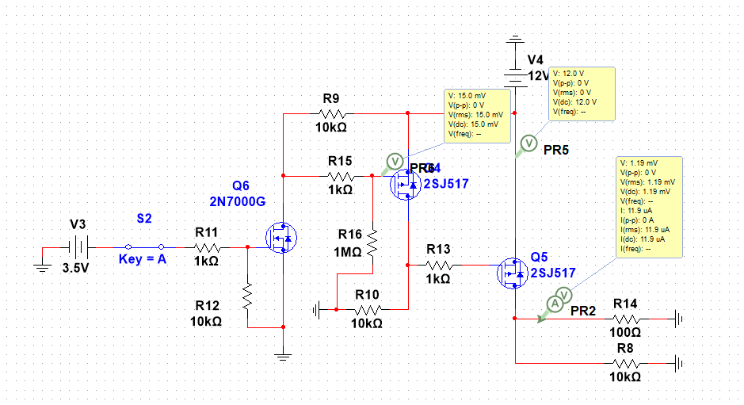
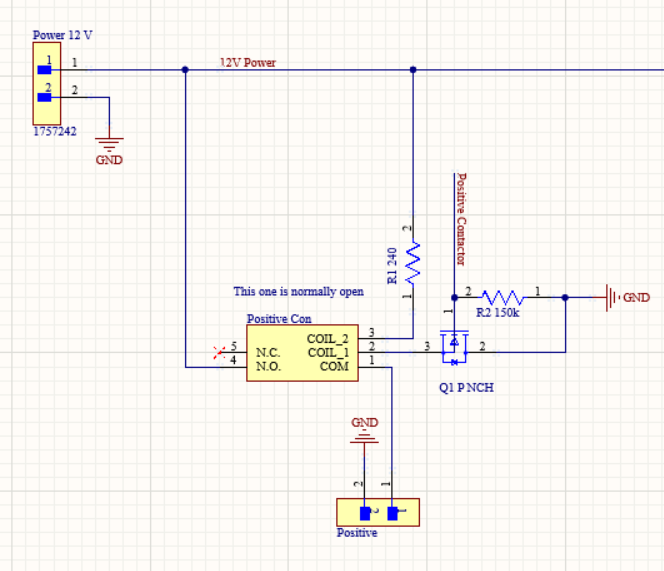
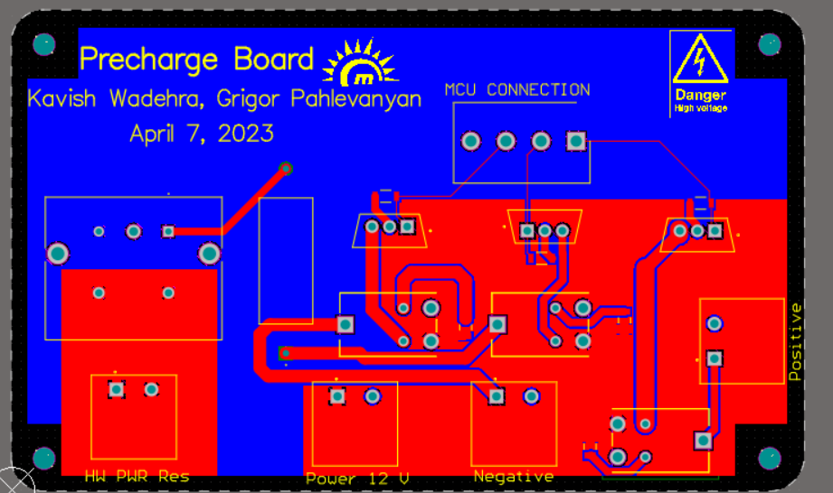

Precharge circuits are an effective means of preventing stress and damage to electrical systems.
They are typically used in electric vehicles, battery management systems,
or any loads that have large amounts of capacitance.
Capacitive loads require precharge circuits because the uncharged capacitors can produce
a short that results in an unlimited inrush of current, which can cause damage to other components
of the electrical system. A precharge circuit utilizes a very simple system involving a high wattage
resistor and a switch. Its function is to initially limit the current, allowing the capacitors in the device to
charge up, and then switch to a short, preventing further damage to the system. The image here illustrates the precharge
circuit's operation. contactors are shown instead of switches.
This is because precharge circuits require both a negative and a positive contactor to
ensure safety and greater control. Contactors are used instead of normal relays as they
support higher voltages and currents. The contactors are designed using peripheral circuitry,
which is the main focus of this board. By using contactors instead of switches, the precharge
circuit can be actuated and controlled more precisely, providing a safer and more effective means
of preventing damage to the electrical system.

Schematic Design
Comparator Actuation
Our team drew inspiration from Mr. Salih's design,
an experienced electrical lead and manager whose work
can be found at: https://www.behance.net/salihm/projects.
His design utilized a comparator paired with an RC circuit
to create a timing effect, allowing the contactor to close on
the high wattage resistor switch side for a set duration before
switching to the positive contactor side. While this design served its
purpose for some time, it was not ideal for our team's needs as we required more control over
the specific contactors, including the addition of a negative contactor for safety reasons.

Transistor Actuation
Our team developed a two-MOSFET actuation system that is
controllable via a microcontroller. The system comprises of a logic level
MOSFET for interfacing with the microcontroller and a power MOSFET for directing
a maximum of 100 mA current for the contactor coil control. The circuit design was
simulated and validated using multisim, as shown in the documentation. However, we encountered
issues with circuit isolation since the circuit lacked an adequate buffer for isolating the coil
side of the contactor and the MCU. As a result, we had to explore other approaches to address this
limitation.

Transistor - Relay Actuation
Finally, the ultimate configuration employed an n-type power MOSFET as a grounding source while connected to the relay,
providing adequate circuit isolation. This design was utilised in the final iteration for the power management board and the precharge circuit.
Furthermore this design was validated by the ASC judge as per the 2024 regulations.
The design is depicted here.

PCB Design
Design Considerations
In order to accommodate for the heat produced from the current on the precharge relay side,
which can support up to 90V and a maximum of 25 amps, our team opted to utilize polygon and
power planes instead of normal routing. This design decision allowed for an entire plane to
distribute power off of, providing better circuit isolation and heat dissipation. Additionally, we
utilized an entire grounding plane for better signal integrity. To prevent accidents, we selected
components with a 1.5x higher rating than expected for the board.

Final PCB Product
After over 20+ iterations and hard work, the final board is shown here.